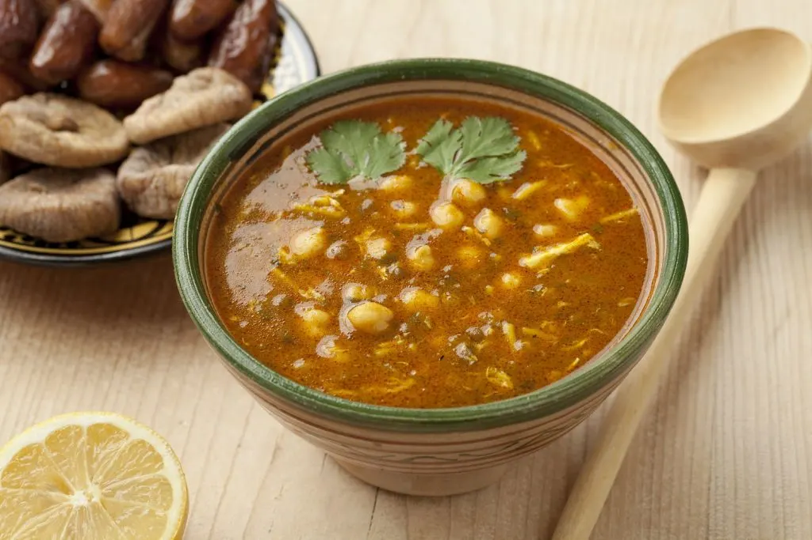

Moroccan Harira Soup

What Is Moroccan Harira Soup?
Harira is a traditional Moroccan soup of tomato, lentils, and
chickpeas. Wonderfully fragrant with zesty seasoning, it often ranks
high on lists of must-try Moroccan foods. It's a popular offering in
Moroccan homes and restaurants, and you can even find it sold as
street food.
The name harira, derived from the Arabic word for silk, makes
reference to the texture of the soup after it's been thickened with
either eggs or a tedouira of flour and water. The tedouira
(thickener) sometimes includes yeast and may be left to ferment for
a day or two.
EQUIPMENT
- Pressure Cooker
- Stock Pot
- Food Processor
INGREDIENTS
- 8 oz. lamb, beef or chicken, diced
- 3 tbsp vegetable or olive oil
- Several soup bones (optional)
- 2 lbs soft, ripe tomatoes - (about 6 large)
- 1 handful dry chickpeas, soaked and peeled
- 2 handfuls dry green or brown lentils
- 1 large onion, grated
- 1 stalk celery (with leaves), chopped
- 1 small bunch flat leaf parsley, finely chopped
- 1 small bunch cilantro, finely chopped
- 1 tbsp Smen (optional)
- 1 tbsp salt
- 1 tbsp ginger
- 1.5 tsp black pepper
- 1 tsp ground cinnamon - optional; see notes
- 1/2 tsp turmeric
- 3 tbsp tomato paste - combined with 1 or 2 cups water
- 3 tbsp uncooked rice OR broken vermicelli
- 1 cup flour - combined with 2 cups water
- lemon wedges and cilantro (optional) - for garnish
INSTRUCTIONS
Ahead of Time - Prep Ingredients
-
Soak the chickpeas overnight. The next day, drain and peel them.
This is easily done by pressing chickpeas one-by-one between
your forefinger and thumb or by rubbing all of the chickpeas
vigorously in a kitchen towel. (The prepped chickpeas may be be
frozen until needed.)
-
Pick through the lentils to remove any stones and debris; set
aside until ready to use.
-
Stew the tomatoes then pass them through a food mill to make a
puree; discard the skins and seeds. Or, cut the tomatoes into
quarters and process them, with or without skin, in a food
processor until smooth. (The pureed tomatoes may be frozen until
needed.)
-
Grate the onion or process it to a thick pulp in a food
processor. (The grated onion may be mixed with the pureed
tomatoes and frozen until needed.)
-
Wash the celery and finely chop it. Set aside. Remove and
discard large pieces of stem from the parsley and cilantro. Wash
the parsley and cilantro and leave to drain thoroughly before
chopping finely by hand or in a food processor. (The chopped
herbs may be mixed together and frozen until needed.)
Make The Soup
-
In a 6-quart or larger pressure cooker or stock pot, brown the
meat in the oil over medium heat. Add the soup bones, peeled
chickpeas, pureed tomatoes, grated onion, spices, smen (if
using) and 3 cups (710 ml) of water. Bring to a boil, cover and
cook with medium pressure for 25 minutes (or simmer for 50 to 60
minutes).
-
Add the lentils, tomato paste mixture, chopped herbs and 8.5
cups (2 liters) water. Bring to a boil and cover. Continue to
step 3 or step 4.
-
If planning to add rice, cook the soup with medium pressure for
30 minutes (or simmer for 60 minutes); add the rice, and
continue cooking with pressure for another 15 minutes (or 30
minutes by simmering).
-
OR if planning to add broken vermicelli, cook the soup
with pressure for 45 minutes (or simmer for 90 minutes) before
stirring in the broken vermicelli. Continue simmering for a few
minutes until the vermicelli is tender.
-
Taste and adjust seasoning. Thicken the soup to a silky,
cream-like consistency by gradually adding the tedouira (flour
and water mixture), stirring constantly to ensure that it's well
blended. Use only as much as is needed to make the soup as thick
as you like.
-
Simmer the soup for another 5 to 10 minutes, stirring
occasionally and skimming off any foam that forms on the
surface.
- Remove from the heat and serve.
NOTES
-
A skin will form on the soup as it cools. This can be stirred
and blended back into the soup.
-
When reheating the soup, use medium or low heat and stir
frequently to avoid lentils sticking to the bottom of the pot
and burning.
-
If you would like to freeze the soup, do so before adding the
thickener and preferably before adding the rice or broken
vermicelli. Allow it to cool completely before freezing. On the
day of serving, thaw the soup over low heat then resume cooking
from where you left off.
-
Cinnamon is optional and can be omitted. While many Moroccan
cooks use it when making harira, not everyone likes it. On a
personal note, I do prefer harira with a small amount of
cinnamon as indicated in the recipe. It is very subtle and
complementary to the overall flavor of the soup when used
conservatively.
-
Lemon wedges may be served on the side for those who like a
squeeze of fresh lemon juice as a condiment for the soup. If
desired, garnish with a little fresh parsley or cilantro.
-
Blending the flour and water tedouira ahead of time will help
ensure that it is lump-free when adding it to the soup.
-
To make gluten-free harira, you can use cornstarch,
tapioca starch, or another substitute for the flour to thicken
the soup at the end of cooking.
Back to top
Back to homepage